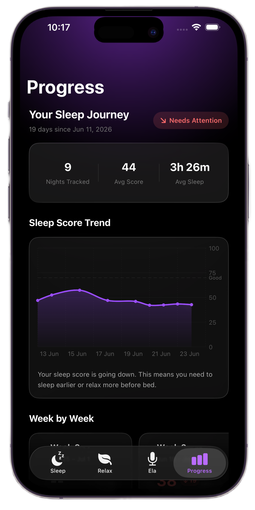

Say goodbye to
sleepless nights
Somnio combines your Apple Watch data with clinically proven CBT-I techniques to quiet your mind, break the cycle of sleeplessness, and rebuild your natural sleep cycle.

Make bedtime peaceful again.
Sleepless nights are frustrating and exhausting. Somnio uses your Apple Watch and evidence based CBT-I methods to help you rebuild your relationship with sleep without pills or empty promises.
Over 33% of adults suffer from sleep issues. Somnio targets the behavioral causes of exhaustion without chemical dependency.
Awake, REM, Core, and Deep sleep are vital. Somnio tracks your watch data to identify and optimize your recovery patterns.
Healthy sleep latency is under 20 minutes. We nudge your circadian rhythm to naturally reset your sleep window.
Everything you need to understand your sleep.
Your Sleep Diary, Decoded
Wake up to a complete picture of your night. The Sleep tab pulls total sleep duration, sleep score, bed time, wake time, and sleep stages directly from your Apple Watch. Every metric is analysed according to CBT-I guidelines to help you understand your recovery.
Relax Your Mind Before Bed
The Relaxation tab is your wind down companion. Follow a guided 4 7 8 breathing exercise with a calming visual timer. When you are ready, choose from a library of sleep music like Rainfall, Piano Dreams, and Flute Melodies to quiet a busy mind.

Ela — Dump Your Overthinking
Quiet racing thoughts with Ela, your private thought recorder. Tap Start, speak freely, and Ela quietly saves everything. Your recordings stay completely private. Use Ela on your iPhone or directly from your Apple Watch for a faster, hands free bedtime journal.

Track Your Sleep Progress
Track your sleep journey over time. The Progress tab maps nights tracked, average sleep score, and average sleep duration in a clear trend chart. Somnio shows whether your sleep is improving so you always know where you stand.

Weekly Reports with AI Insights
Get a detailed weekly report showing average sleep score, sleep stage breakdowns, and AI insights on sleep consistency. Review your progress anytime and export it as a shareable PDF to share with your doctor in one tap.

Three simple steps.
Set up
Download Somnio and allow Apple Health access.
One timeSleep
Wear your Apple Watch to bed. Somnio will track your sleep automatically.
Wear your WatchView data
Open the app in the morning to see your sleep metrics, CBT-I guidance, and recovery progress.
Every morningLearn about sleep.
Read our short articles about sleep science. Learn about the 20 minute rule, sleep stages, and good habits.
What is CBT-I?
The gold standard therapy for chronic insomnia.
Hover to learn →What is CBT-I?
Cognitive Behavioral Therapy for Insomnia (CBT-I) is a structured, evidence-based program that targets the root causes of sleep issues. By utilizing techniques like stimulus control, sleep restriction, and cognitive restructuring, it trains your brain to associate the bed with deep sleep rather than stress. It is clinically proven to treat chronic insomnia long-term without relying on sleeping pills.
The 20 minute rule
A simple technique to retrain your sleep habits.
Hover to learn →The 20 minute rule
If you find yourself awake in bed for more than 20 minutes, the golden rule is to get up. Go to another room and engage in a quiet, low-stimulus activity in dim light, such as reading a book or listening to calming music. Avoid screens or clock-watching. This technique prevents your brain from conditioning itself to associate your bed with frustration, anxiety, and wakefulness, making it easier to drift off when you return.
Sleep Stages
Deep, REM, Core and why each one matters.
Hover to learn →Sleep Stages
Your sleep is divided into distinct cycles, each serving a vital purpose. Deep sleep is essential for physical recovery, muscle repair, and immune support. REM sleep is where dreaming happens, crucial for emotional processing, memory consolidation, and cognitive function. Core sleep (light sleep) makes up the transition periods. Somnio decodes these stages from your Apple Watch data so you can see if you are getting the balanced, quality sleep your body requires.
Good Sleep Habits
Daily routines that improve your sleep quality.
Hover to learn →Good Sleep Habits
Consistent daily routines form the foundation of great sleep hygiene. Maintain a strict sleep schedule by waking up at the same time every day—even on weekends—to align your circadian rhythm. Keep your bedroom dark, quiet, and cool (around 65°F/18°C). Restrict screen exposure for at least one hour before bed, as blue light suppresses melatonin production. These small adjustments signal to your nervous system that it is safe and time to wind down.